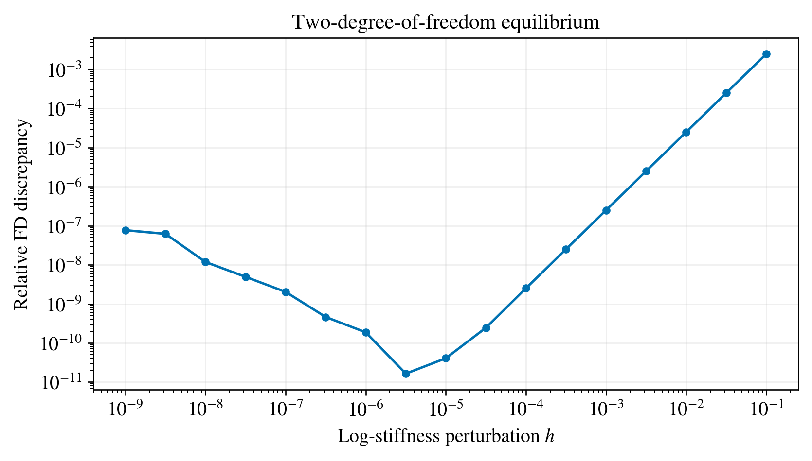

Verify a derivative before interpreting an update#
A two-degree-of-freedom example#
Consider the nondimensional linear equilibrium problem
The positive coefficient \(e^\theta\) plays the role of a stiffness. We observe both displacement components and define \(J=\frac12\|\mathbf u-(0.2,0.3)^T\|^2\). The matrix is symmetric positive definite, so this small system has a unique equilibrium state. This statement concerns the forward system; inverse uniqueness depends separately on the observation map.
Central finite differences#
At fixed \(\theta\), evaluate \(J(\theta+h)\) and \(J(\theta-h)\):
This is a derivative with respect to log stiffness. Perturbing stiffness itself instead would calculate a different coordinate derivative. For \(m\) unknowns, a full coordinate-wise central-FD gradient requires \(2m\) perturbed forwards; a separate baseline evaluation adds one more.
The adjoint calculation#
Differentiate the equilibrium equation: \(A\,d\mathbf u=d\mathbf b-(dA)\mathbf u\). Define the adjoint through \(A^T\boldsymbol\lambda=\mathbf u-\mathbf y^{\mathrm{obs}}\). Then
The derivative of the operator matters. Differentiating only the load vector would give the wrong result in this example. A linear solve evaluates the action associated with \(A^{-1}\) efficiently.
PyTorch’s differentiable linear solve supplies the same derivative through automatic differentiation. The retained calculation compares that value with the hand-derived adjoint and an FD step-size sweep.
The reported discrepancy is \(|D_hJ-g_{\mathrm{AD}}|/\max(|D_hJ|,|g_{\mathrm{AD}}|,10^{-30})\). Both derivatives use the same logarithmic coordinate.
{kind=link}

Figure 5 Relative central-FD discrepancy against AD for the small equilibrium model. The hand-derived adjoint provides a second comparison. Individual values come from the retained computation; the line connects sampled step sizes.#
Time-dependent fracture adds history#
A complete time-step state can be written as \(\mathbf z_n=(\mathbf u_n,\mathbf v_n,d_n,H_n,\ldots)\). For fixed time steps, let \(\mathbf z_{n+1}=F_n(\mathbf z_n,\theta)\). Reverse differentiation accumulates contributions from every operation in which \(\theta\) appears. A parameter used at every step contributes more than its effect on the final step alone.
Damage bounds and updates such as \(H_{n+1}=\max(H_n,\psi^+_{n+1})\) introduce branch choices. The selected branch can have a useful derivative even when a finite perturbation selects another branch. Record branch information and examine the step-size dependence before attributing a disagreement to either AD or FD.
Unrolling and the reverse recurrence#
Suppose the objective includes several observation times: \(J=\sum_{n=0}^{N}\ell_n(\mathbf z_n,\theta)\). Define \(\boldsymbol\lambda_n\) as the derivative of the remaining objective with respect to the state at step \(n\). The reverse calculation starts at \(\boldsymbol\lambda_N=\partial_{\mathbf z_N}\ell_N\) and proceeds through
The complete parameter derivative is
The last term matters when initial conditions depend on the unknown parameters. It vanishes for prescribed parameter-independent initial states. Each partial derivative holds its other arguments fixed. Reverse AD evaluates these vector–Jacobian products through the recorded operations without building every full Jacobian matrix.
An implicit derivative of an inner equilibrium solve and an unrolled time-history derivative can therefore occur in the same programme. The former handles one solve; the latter carries its influence through subsequent states. Both supply local sensitivities at the chosen operating point.
Exercise 1: the missing operator term#
Set \(d\mathbf b/d\theta=0\). Explain why the sensitivity is generally still nonzero, and identify the exact matrix entry responsible in this example.
Worked solution
The load is fixed but the stiffness changes. Only \(A_{11}\) depends on \(\theta\), with derivative \(e^\theta\). The displacement changes through equilibrium, giving \(-\lambda_1e^\theta u_1\).
Exercise 2: a reliable comparison#
What must remain identical in the AD and FD forward evaluations? Why should we retain the larger-step discrepancies as well as the best agreement?
Worked solution
Use the same mesh, loading, objective, parameter coordinate, history reset, time steps, constraints and numerical tolerances. Only the prescribed parameter perturbation changes. The full sweep shows finite-step behaviour; selecting only the best point conceals that information.
Exercise 3: count the work#
For nine unknowns, how many perturbed forwards does a central-FD coordinate gradient require? Does an AD update cost only one forward calculation?
Worked solution
Central FD requires 18 perturbed forwards. Reverse AD needs a recorded forward plus reverse work. Rejected line-search trials and diagnostics are additional calculations and should be counted. An acceleration comparison requires measured end-to-end wall time.
Exercise 4: differentiate two steps#
Take \(z_0=1\), \(z_{n+1}=\theta z_n\) for two steps and \(J=\tfrac12(z_2-y)^2\). Compare the complete derivative with a calculation that mistakenly holds \(z_1\) fixed.
Worked solution
Since \(z_2=\theta^2\), the complete derivative is \(2\theta(\theta^2-y)\). Holding \(z_1\) fixed keeps only the second step’s direct contribution, \(\theta(\theta^2-y)\). The missing contribution travels through \(z_1\). This simple example explains why detaching intermediate states changes the differentiated map.